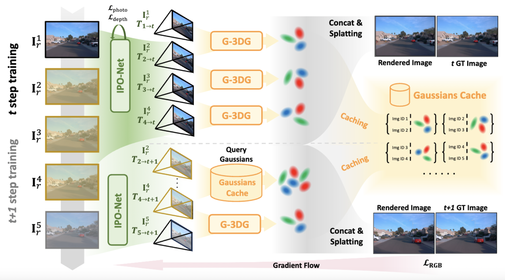

An overview of our method, demonstrated by using two continuous training steps given \(N\) selected nearby images. In the first training step, reference views are selected from nearby time \(r\in \mathcal{N} (t)\), then the IPO-Net estimates the relative poses between reference and target image { \(\mathbf{T}_{r\rightarrow t}\) }for 3D-Gaussian predictions. Then \(\mathbf{I}^1_r \cdots \mathbf{I}^4_r\) forms three image pairs and is fed into the G-3DG model to predict Gaussians \(\mathbf{G}_1\cdots\mathbf{G}_3\) for novel view splatting and store them in Gaussians cache. In the second step, since {\(\mathbf{I}^2_r \cdots \mathbf{I}^4_r\)} are collaboratively used by the last step, we directly query their image ID in the Cache Gaussians and pick up corresponding Gaussian points \(\mathbf{G}_2,\mathbf{G}_3\) with newly predicted \(\mathbf{G}_4\) for novel view splatting.
@article{li2024GGRt,
title={GGRt: Towards Generalizable 3D Gaussians without Pose Priors in Real-Time},
author={Hao Li and Yuanyuan Gao and Dingwen Zhang and Chenming Wu and Yalun Dai and Chen Zhao and Haocheng Feng and Errui Ding and Jingdong Wang and Junwei Han},
year={2024},
eprint={2403.10147},
}